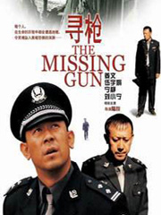
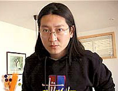

毕业于南京大学中文系，获硕士学位的李冯，曾在大学任教，1996年辞去公职，到北京自由写作。他的小说大多取材于中国的历史故事或民间传说，人物也多为中国人熟知的历史人物。他以个人化写作颠覆那些被人耳熟能详的故事，对已经成为标本式的历史人物进行解构，被称为“新历史主义”。李冯也被看成新生代的重要作家之一。
不管是演员还是编剧、摄影、作曲……只要与张艺谋的名字联系到一起，想不火都难。李冯也概莫能外。一部《英雄》使他名声大噪，其知名度迅速延伸到文坛以外更广阔的领域。
李冯火了。毕竟《英雄》是去年国内最火的一部大制作电影，毕竟张艺谋是内地影坛最具新闻效应的导演。
中国电影《寻枪》得到了业界与观众的极高评价，所有的光辉灿烂起于一篇短短的小说，让我们重溯《寻枪》的文本源头。
凡一平，广西都安县人。正是他的小说《寻枪记》被改编为电影《寻枪》。今天，知道电影《寻枪》的人很多，但知道原著者凡一平的人依旧不多。他的名字大概给了他一种宿命的安排，可是，跟他合作过的人都说，他真的不是一个认命的人。
而陆川更为一个不凡之人，他不但把《寻枪记》改编为电影剧本后拍成了电影，而且又在电影剧本的基础上写成了小说《寻枪》。
【故事梗概】：警察马山一夜梦醒后，发现自己的佩枪神秘失踪。小镇上弥漫着重重迷雾，丢枪事件致使派出所的先进集体称号不保，马山的先进个人也泡汤。局长设想的情况更让他不寒而栗：枪里有三颗子弹就是三条人命，如果歹徒枪法好，一枪两个就是六条人命，如果歹徒去了北京……果然出了人命：马山过去的恋人李小萌被杀。一夜之间，小镇充满了危险诡异气氛。命案的发生、危险的靠近，使马山走上了不寻常的寻枪之路……
从《寻枪记》到《寻枪》
■凡一平
《寻枪记》是一篇小说，它发表至今已经两年了，而《寻枪！》是一部电影，到目前为止还在贵州的青岩镇日以继夜地拍摄之中。《寻枪记》是我的作品，而《寻枪！》属于摄制它的单位和人--从商业角度看它属于投资者华谊兄弟太合公司和中国电影集团，从艺术的角度看它属于编剧、导演陆川，还可以说属于主演姜文和宁静。
但不能说《寻枪！》和《寻枪记》没有关系，因为《寻枪！》是根据《寻枪记》改编的，两者的关系或情形就像摆在店里的一块布料，被赏识它的人买去，然后裁剪缝制成一套衣服。
现在，这衣服正在做，并且是为姜文度身定做的。当初陆川在有意把《寻枪记》搬上银幕的时候，就想到了姜文，但他没有对任何人说，因为陆川还不满三十岁，是没有导过电影的导演，要请出姜文这样的大牌明星是难以置信的事情，对这陆川也没有信心，为此他只有埋头写剧本，用剧本去感动姜文。这样一个弄了两年改了十稿的剧本能让姜文感动，让宁静感动，我由衷钦佩陆川的编剧功力，并对他的导演才华充满信心。
2001年3月的一天，陆川给我来电话,《寻枪！》即将拍摄，主演姜文，这两天就去广西选景。此时距《寻枪记》出卖电影版权已经两年。这两年当中，我和陆川通过几次电话，有一次也说即将开拍，要到广西选景。终于，我们在广西见面了，我陪着陆川和美术吕东去了扬美、都安、宜州、黄姚、大圩，最后把拍摄地初步定在了黄姚。黄姚是昭平县的一个古镇，和剧情相协得几近完美。另外摄制组还在广西的剧团挑选了部分和姜文、宁静配戏的演员。但后来有了些变化，两会期间，贵州省委书记钱运录闻知姜文主演《寻枪！》，力邀把拍摄地移到贵州。这一变化让我感到有些意外。好在除了我，没有谁为此感到遗憾。
5月中旬，我接到去《寻枪！》剧组探班的邀请。到了贵州的青岩镇，这也是个被云雾缭绕的古镇，幽闭、朴实、雅致的民居同样让我找到了一个寻枪的警察走在街上的感觉。于是制片主任问我满不满意？青岩镇和黄姚有没有区别？我说没区别。如果有区别的话，那就是现在的青岩镇名闻遐迩，她的价值和美丽已经用不着当地花巨大的经费和长年的时间去做广告宣传了，因为姜文和宁静已经把青岩镇捧红。
见到姜文和宁静是在拍戏的现场，尽管我的房间就在他们房间的隔壁。姜文和宁静着戏服和我握手，这样的见面方式让我感觉我是在和我小说的人物再见，而不是和我喜爱的明星。事实上姜文也没有对我摆谱，他随和得让人惊讶。他开口就和我谈小说，并让我点出剧本少了小说中的哪些细节，然后他向我说明这些细节不能在电影中表现的原因，他只说文学和电影不一样。
但我和陆川的交流却十分坦白，我们两年的交情使我们容易达到这一点。我认为剧本有超过小说的地方，比如把李小萌（宁静饰）设为马山（姜文）的初恋情人，这很好。但惋惜的是最后偷枪的人不是马山的战友、镇长没有跟马山借枪，这使得《寻枪！》的震撼力受到削弱。陆川告诉我之所以人物关系和细节有所改变，很多小说中可以表现的东西，是无法在银幕上出现的，因此他希望能为《寻枪！》找到新的出路，也就是摒弃寻枪的具体过程而关注一个男人在遭受巨变之后，心灵的变化，让观众目睹一个男人如何步入生命的黑暗，在黑暗中挣扎并最终依靠自己的力量让自己的灵魂获得救赎的过程。因此电影《寻枪！》或许会有很多心理片的元素。电影的意义将放在警察丟了枪以后精神的失重、偏颇到执着、回归的历程，而不是着重表述丟枪以后又发生了什么事。丟枪－寻枪只是形式。寻枪的过程实际上是一个人寻找生命支柱和意义的过程，这是电影的主旨所在，也是电影的诗意所在。是导演陆川的意图和追求，所有的演员都应该能明了这一切。
但是演员们都明白了吗？最重要的是姜文明白了吗？姜文不仅是明星，也是导演，他能否对一个无论是资质还是年纪都小于自己的导演的意图洗耳恭听并贯彻到角色中去？这个问题只有看到将来完成的电影，才能解答。
这是摆在陆川面前的问题，也是难题。
陆川笑着说，既然理论上我是这部戏的导演，我就一定会拼命在电影中放入我的声音。前辈们的声音都很好听，但是大家听多了，现在到了该有新鲜陌生的声音出现的时候了。我想没有什么人有能力完全捂死我的嘴，既然电影制作是个漫长的过程，我会竭尽全力在制作中将我的声音放进去。但是如果我的意图真的完全得不到理解、贯彻和体现，那么我肯定会立刻买张机票飞回北京。
陆川是在表明他的决心和信念，他看似赌气的话却让我预见到《寻枪！》的未来，因为他紧握着导筒，并清楚它的份量或重量。他的导演本色浓厚纯正。我为小说《寻枪记》交到他手上感到放心。两年前，我们第一次通话，他说："凡老师，我是一个年轻导演，没有任何资历。可是我非常喜欢《寻枪记》，它里面有意义。如果相信我，把小说给我，我发誓一定会让所有人知道这部小说的意义。"有了这样的话，我把小说给了陆川，他用两年的时间完成了自己的誓言。前期拍摄接近尾声的时候，我突然得知了《寻枪！》剧本在海外获得大奖的消息，我真很为陆川高兴，我想告诉他，这才是《寻枪！》获奖的开始。我祝愿《寻枪！》能早日完成后期制作和观众见面。
凡一平：小说创作是有原型的
《寻枪》在吸引了公众广泛的注意力的同时，也带出了些敏感的说法，说是《寻枪》这个电影有“抄袭”日本某部电影的嫌疑？
这位广西作家表示之所以选择“寻枪”这一主题，是因为他在当地听说过两个真实的寻枪故事。故事都是说有个警察在朋友家喝醉酒，第二天醒来发现枪不见了，其中一个故事中的警察最后发现枪掉在床垫与墙壁的夹缝里了，一场虚惊，而另一个故事里的警察则自始至终都没有找回枪，最后他被开除了，所在的派出所也因为他的过失而没有评上当年的先进集体。凡一平说：“这样的故事在当地是很多的，就在我写完《寻枪》后，还听说有一个警察跟女朋友在野地里亲热，被小偷连衣服带枪卷了个精光。”对于郭小东指《寻枪》中追小偷的情节跟《野良犬》类似，凡一平表示自己原来的小说中并没有这一情节，这是电影后来改编的。他原来的小说很简单，凶手是马山的战友，在战场上因为受伤而失去生育功能，回来后就变态了，一心要杀李小萌和接近她的所有男人。对于郭小东指出的《寻枪》与《野良犬》故事发生的背景相似———都是幽闭的山村小镇，都以闷热为基本色调，凡一平表示，“山村小镇”和“闷热”都只是他在广西一些小镇的生活体验。
对于最关键的问题———凡一平在创作小说前有没有看过黑泽明的《野良犬》，他说：“没有。直到现在，我都没有看过黑泽明的任何一部电影。”
《寻枪》“亲爹”细说电影改编
国产电影《寻枪》在北京放映的第一天，广西作家凡一平像个普通观众一样，掏了25块钱买票进入影院，而他正是《寻枪》的原小说作者，用他自己的玩笑话说，是《寻枪》的“亲爹”。
小说里，“凶手”另有其人 在小说中，盗枪、杀人的凶手是马山的老战友，凡一平说自己这样安排有着特别的用意——凶手因为在战场上负伤而失去了性功能，导致对于别人的“淫乱”产生了变态的仇恨，这才杀死李小萌。到了电影版中，马山的战友成了个插科打诨的人物，包袱抖到最后，杀人、偷枪犯成了一个前面只露过两次面的“卖羊肉粉的”，原因也淡化处理成了因假酒埋下的仇恨。这样大的改动使凡一平无法认同，觉得自己曾经费力设下的“扣儿”，冲击力量被减弱了。
电影中，“枪”成了精神符号 原作《寻枪记》平淡写实，是一部融社会批判和人性批判的文学作品。电影版的《寻枪》运用各种电影元素，竭尽全力地烘托出悬疑气氛，成了一出亦幻亦真、扑朔迷离的心理戏。凡一平坦言，他写作时并没有想到要有什么深奥的主题，只想着要编一个有趣的故事。电影《寻枪》却被赋予了某种思想，“枪”成了理想精神信念的符号。 （王蕾）
专家文章
* 王安忆：读陆川小说《寻枪》
陆川显然不是一个熟练的叙述者，我似乎能够想象他，面对情节与情节之间的过渡，不晓得如何将这空白填满。人和事都兀自在着，而之间的那种连绵不断的关系，究竟当由什么去组成...[精彩全文]
《英雄》小说面世被定义为"另类"
就在电影《英雄》还没上演之际，小说《英雄》已经面世。出版者和作者李冯本人都称，书版《英雄》不做“明星书”，且要把这类书继续创作下去，形成系列产品。
李冯称，《英雄》是张艺谋拍的第一部根据原创作品改编的电影。以往张艺谋电影都是根据现成的文学作品改编，这次老谋子想到要拍武侠，经过三番五次寻找，没有满意的原创版本，于是决定自己编个故事。因为和李冯早在其他剧目的编改过程中就建立了良好的信任、欣赏关系，李冯就成了编这个故事的第一人选。《英雄》的创作经历了编故事到写提纲到讨论到推翻到再讨论再到推翻的反复磨合过程，历时长达两年多。在剧本完成拍摄后，李冯才又把它写成文学本——小说与电影有很多不同。
戏剧电影出版社将《英雄》一书的武侠，定义为“另类”。社长艾东解释说，它有着古龙式的断句，有着“罗生门”式的结构等特征，将种种资源糅合为一体，再以特别新颖的故事，诠释出作者对于“英雄”的理解。这本书是新鲜的。
英雄惜英雄－－张艺谋说李冯
认识李冯，大概是7年前了。他是来参加《武则天》写作的。从那时起到现在，他给我的印象始终未变：平静写作，生活低调，创作状态稳定踏实，不会因为境遇的改变而成了另一个人。
我从小就是个武侠迷。刻画江湖上的武侠英雄，始终是我的一个梦。五年前，因为成龙希望合作一部电影，开始了关于武侠电影的构思：先是成龙编故事，接着又打算改编古龙，然后是自起炉灶，干脆自由想象，中间过程反反复复。让我感动的是，李冯作为参与者，自始至终都是随叫随到，永不疲倦，而且不计报酬。
我的工作习惯使我们经常工作到深夜。常有这种情况：从王斌家出来，他坐出租，我开车，因为我们是去不同的方向。每当我的车拐弯时，他乘坐的出租从边上驶过，在凌晨暗淡的灯光下，可以看到坐在车里的李冯的背影，默默无声，一动不动。
后来就有了《英雄》的剧本。所有读过剧本的人都说剧本好看。可以这么说，我们的《英雄》能有这么大的投资，能被全世界的片商看好，抢购片花，最主要的是得力于两个因素：一，由于李连杰、梁朝伟、张曼玉、陈道明、章子怡、甄子丹这些一线明星的加入；二，因为有个好剧本。于是在这两大因素的基础上再加上对我的信任，才有了现在的这部电影。
《英雄》的出世要感谢很多人，李冯是第一个。
英雄谁属？古往今来对“英雄” 一词，理解万千。杀富济贫、行侠仗义者是也，严于职守、精忠报国者是也……梁山好汉、绿林草莽、岳家军、杨家将等都属此意中人。如今，李冯的《英雄》小说版也提出了对英雄内涵的探讨。
【故事梗概】故事讲的是战国末期刺客刺秦王的传奇。刺客有四，最神秘的无名，最美丽的飞雪，最有名的残剑，最明义的长空。故事就在他们的交往纠葛中展开，比武、交友、爱情，当然，最重要的是刺杀秦王。最先的时候，每个人的目标都很明确，为刺秦王苦练武功，败而不止。但后来，众人为刺与不刺这一根本问题发生了分歧，分为两派，无名、飞雪、长空三人一派，残剑一人一派，前者主刺，后者反之。而最终的决定权在无名手中……故事不是从头至尾一次讲述完毕的，针对同一故事有三个不同的版本，就如日本导演黑泽明的《罗生门》，可以让我们从各个方面对故事有最充分的了解。讲述者为无名和秦王，刺客与被刺者，在森严的内殿之上，相距仅十步，空旷而肃杀，紧张异常。
谁是真豪杰?－－读李冯小说《英雄》
为秦王正名
究竟谁是英雄、真正的英雄？可以是长空、飞雪，他们或为之断臂，或欲为之献身；可以是残剑，为了理想的实现，他不惜背叛爱人，抛弃生命；可以是无名，他有勇有谋，只身入虎穴……但细读小说才知，故事中真正的大英雄乃秦王嬴政。长空、飞雪、残剑、无名等等的一切，都只为了衬托他而存在。由刺客来衬托被刺者，这充分显示了后者的非同一般。小说有为秦王正名的一面。他残暴、多疑，小说没有否定，但这并不足以掩盖他巨大的历史功绩 ———统一中国。在此，故事才点出了英雄的最高境界———胸怀天下。结束百年战乱，给老百姓一个较为安定的生活环境，这在诸国争雄的时代，不可能避免杀戮和流血。
小说偏于从人性的一面，选择刺客与秦王之间的纠葛，来揭示他深藏不露的内心，特别是他最大的隐痛———孤独。这是不为人所理解的悲哀，是高处不胜寒的寂寞。多年来，他一直生活在千万人的憎恨和仇视中，生活在统一大梦和躲避刺杀中，但他从没放弃，也不懂放弃，这一切他早已从幼年就学会了承受，这是为成就伟业不可避免的付出。天下仅有一人能理解他，刺客残剑，虽然他不可能理解全部。由积极的刺杀者到坚定的阻杀者，这其中，残剑经历了痛苦的身心磨难。最终，在他的理解中，秦王不可杀。其一，统一势在必然，杀已无意；其二，杀死秦王，必将大乱。
从某种意义上讲，残剑是小说中帮助我们理解英雄内涵的人，看英雄谁属，不应拘束于个人情感、国之争斗，而应放眼天下，体恤苍生。尽管我们不能说秦王本人已清楚地明白，自己的作为将会对中华民族的发展产生怎样的影响和意义，从历史的眼光看，之所以能由他统一中国，除了他个人的原因，更多的是历史的必然性。
孤独的英雄们
最终，无名没有刺杀秦王，他接受了残剑的劝说，但却被秦兵射杀。这当然是秦王的命令，虽然有不舍，有热泪，但带剑上殿、图谋行刺，已违秦国大法，作为君王，为了国法威仪，他别无选择。无名倒下了，空旷的大殿上只留下秦王孤独的身影。孤独，还是孤独，或许这是古今中外成大事者不可逃的劫数，是真英雄的伴生物。千秋之后，谁能万岁。纵横天下，江山如醉呀，吾谁与归！
当然，不可否认的是，正如我前面所说的，长空、飞雪、无名等也是英雄。为了国家和人民的利益，他们置生死于不顾。虽然，相比之下，他们的思想不够超越，但毕竟，人是有局限性的，没有几人能超越历史和时代。这样，残剑的存在就尤显可贵。他参透了剑道，也看清了世道，他看出了秦王和统一的伟大意义，他牺牲了生命和比他生命更宝贵的爱情。他，也是真英雄。
英雄美人，自古从不分离。前者的豪，后者的艳，一直是众人崇拜和倾羡的对象。残剑是英雄，飞雪是美人，不过她巾帼不让须眉。为了完成刺杀秦王的使命，她不惜三年和挚爱的人共居一院却无语。残剑最终倒在她的剑下，他是为了给心爱的人一个最深挚的承诺：他爱她，永永远远。在最后的别离时刻，飞雪没有哭天抢地，只是默默地将自己的胸膛插进了带血的剑尖。她以和残剑同样的姿态完成永恒的生和爱。但我知道，她有一句话想对残剑说：谁给你选择的权利，让你就这样地离去！？
鲜明的英雄观
探讨英雄真义的小说，我们最熟悉的是金庸的作品，尤其是《天龙八部》，里面的乔峰也有超越狭隘的民族争斗的一面，但整体说来，不如《英雄》来的明晰。可以说小说《英雄》是迄今为止题旨最鲜明的探讨英雄真义的文字作品。除了思考的深刻，小说的语言也颇具风格，简洁明了，绝不拖泥带水。情深处，凄婉缠绵，打斗时，酣畅淋漓。特别是对飞雪的描述，容貌的绝色，形态的飘逸，性格的刚烈，情感的深挚，都是吸引人的亮点。
根据小说改编的影片《英雄》是著名导演张艺谋首次执导的武侠片，准备充足，制备精良，加上演员阵容强大，有陈道明（饰秦王）、李连杰（饰无名）、梁朝伟（饰残剑）、张曼玉（饰飞雪）等的鼎力加盟，相信会不负众望。对我们而言，将小说和影片结合起来看，对英雄真义会有一个更深的领悟。
推荐文章
* 独享小说《英雄》的大气与入微
雪夜，室内静谧无声，避开闹市和影院的喧嚣，台灯下独享李冯的小说《英雄》，如鱼入水，悠然自得。我仿佛穿过时间隧道，回到两千多年前群雄争霸的战国时代，目睹了剑与矛、刺客与秦王、爱情与信念的纠葛、争斗和杀戮，心灵深受震撼...[精彩全文]
* 侠之大者—读小说《英雄》随想
■李智勇
当我第一次读完李冯的《英雄》，便开始感叹于作者精心设计的架构。三种说法，三个故事，衬以三种色彩。红的畸情，蓝的煽情，白的真情。随着情节的发展，疑问也不断升起...[精彩全文]